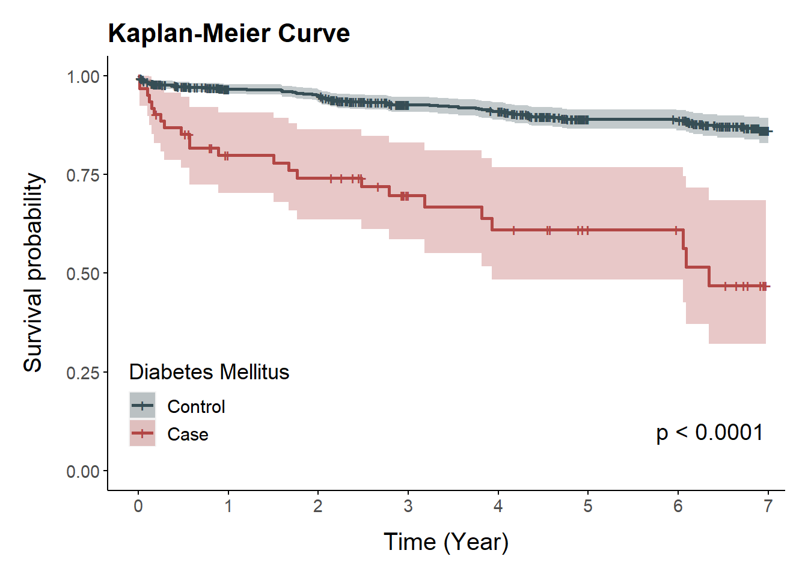
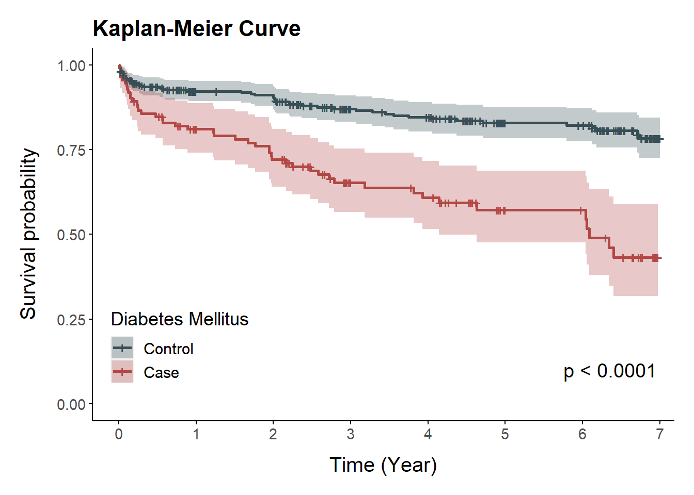
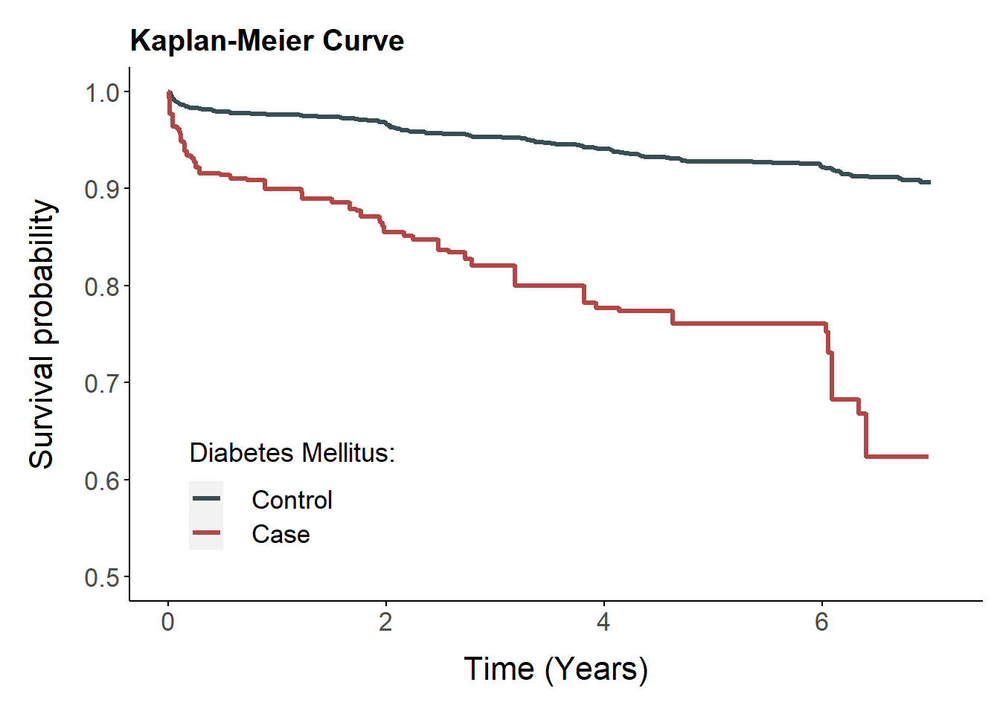

Section 6 Kaplan-Meier curve
6.1 The Kaplan Meier estimator
The Kaplan-Meier estimator is used to estimate the survival function. The visual representation of this function is usually called the Kaplan-Meier curve, and it shows what the probability of an event (for example, survival) is at a certain time interval.
We compared two groups in this study. : DM(case) vs NonDM(control)
- Survival function :
\[S(t)=P(T > t)\]
- Kaplan-Meier estimator :
\[\hat S(t)=\prod_{j:t_j\le t}\left(1-\frac{d_j}{n_j}\right)=\prod_{s\le t}\left(1-\frac{\bigtriangleup N(s)}{Y(s)}\right)\]
\(d_j\) : the number of individuals who experience the event at \(t_j\).
\(n_j\) : the number individuals at risk at \(t_j\).
| * Using data final_com, dat_mat, dat_wt (complete data version) |
| Using list dat_mat_list, dat_imp_list (missing data version) |
| Outcome variable : HTN |
| Follow-up period : DATEDIFF |
| Exposure variable : DM |
| Covariates : Age, Sex, SES, Region, BMI, CCI, Comorbidities(Dyslipidemia, Ischemic heart disease) |
## load library
library(survival)
library(survminer)
library(ggsci)
library(RISCA) # 서버에서는 library(IPWsurvival) 사용## load data
final_com <- read.csv('Data/final_com.csv', header=T)
load("Data/dat_mat.RData")
load("Data/dat_wt.RData")
load("Data/dat_mat_list_0.4.RData")
load("Data/dat_imp_list.RData")## Formula
formula.wt <- formula(DM ~ AGE + SEX + SES + REGION + BMI + CCI + DYS + IHD)6.2 Complete data version
6.2.1 Kaplan-Meier curve function
- Use survfit(), ggsurvplot() function in survival, survminer package to plot survival curve.
gg_km <- function(data){
p <- ggsurvplot(fit = fit_km,
title = "Kaplan-Meier Curve",
ggtheme = theme(axis.line = element_line(color="black"),
panel.background = element_blank(),
plot.title = element_text(hjust = 0, size=16, face = "bold"),
plot.margin = unit(c(5,5,5,5), "mm"),
axis.title.y = element_text(margin=margin(r=13)),
axis.title.x = element_text(margin=margin(t=10)),
legend.text = element_text(size = 11.5, color="black"),
legend.title = element_text(size=13.5)),
palette = c("#374E55FF", "#B24745FF"),
xlim = c(0,2500),
ylim=c(0,1),
### Censor Details
censor = TRUE, # logical value. If TRUE, censors will be drawn
censor.shape="+", # Default value is "+", a sensible choice is "|".
censor.size = 4,
### Confidence Interval
conf.int = TRUE, # To Remove conf intervals use FALSE
### Format Axes (changes x,y axis label)
xlab = "Time (Year)",
ylab = "Survival probability",
font.x=c(15),
font.y=c(15),
font.xtickslab=c(11,"plain"),
font.ytickslab=c(11,"plain"),
### Format Legend
legend.title = "Diabetes Mellitus",
legend.labs = c("Control", "Case"), # Change the Strata Legend
legend = c(0.15,0.2), # c(0,0) corresponds to the "bottom left" and c(1,1) corresponds to the "top right" position
### Risk Table
risk.table = F, # To Remove risk table use FALSE
tables.height = 0.25, # Adjusts the height of the risk table
tables.col = "black",
tables.y.text = FALSE,
tables.y.text.col = TRUE,
risk.table.fontsize = 4.5,
tables.theme = theme_cleantable(font.y=12),
### p-value details
pval = TRUE,
pval.size = 5,
pval.coord = c(2100,0.1)
)
p$plot <- p$plot + scale_x_continuous(breaks=seq(0,2600,365.25), labels=0:7)
return(p)
}6.2.2 General version
fit_km <- survfit(Surv(DATEDIFF, HTN==1)~ DM, data=final_com)
gg_km(fit_km)## Scale for x is already present.
## Adding another scale for x, which will replace the existing scale.
6.3 Missing data version
6.3.1 Matching version
fit_km <- survfit(Surv(DATEDIFF, HTN==1)~ DM, data=dat_mat_list_0.4[[1]])
gg_km(fit_km)## Scale for x is already present.
## Adding another scale for x, which will replace the existing scale.
6.3.2 Weighting version
6.3.2.1 Weighted kaplan-meier estimates
- Use ipw.survival() function in RISCA package to estimate adjusted survival curves by weighting the individual contributions by the inverse of the probability to be in the group (IPW).
surv_res <- function(data, time, status, group, formula){
p.score <- glm(formula=formula, data=data, family="binomial", x=TRUE, y=TRUE)$fitted.values
wt <- (data[,group]=="1")/p.score + (data[,group]=="0")/(1-p.score)
pt <- sum(data[,group]==1)/nrow(data)
sw <- pt*(data[,group]==1) /p.score + (1-pt)*(data[,group]==0)/(1-p.score)
res.akm <- ipw.survival(times=data[,time], failures=data[,status], variable=data[,group], weights=sw)
return(res.akm)
}
res.akm <- dat_imp_list %>% lapply(function(x) surv_res(x,"DATEDIFF","HTN","DM", formula.wt)$table.surv)
risk <- do.call("cbind",res.akm %>% lapply(function(x) x$n.risk))
event <- do.call("cbind",res.akm %>% lapply(function(x) x$n.event))
surv <- do.call("cbind",res.akm %>% lapply(function(x) x$survival))
km_res <- data.frame(time=res.akm[[1]]$times, strata=res.akm[[1]]$variable,
n.risk=apply(risk,1,mean),
n.event=apply(event,1,mean),
surv=apply(surv,1,mean))head(km_res)## time strata n.risk n.event surv
## 1 0 0 2360.020 0.000000 1.0000000
## 2 2 0 2360.020 2.099422 0.9991104
## 3 5 0 2357.921 1.062941 0.9986600
## 4 6 0 2353.958 3.045573 0.9973680
## 5 7 0 2350.912 1.035237 0.9969288
## 6 9 0 2349.877 4.227905 0.99513516.3.2.2 Kaplan-Meier curve by Using IPW
- Use ggsurvplot_df() function in survminer package to plot survival curve from any data frame containing the summary of survival curves.
ggsurv_plot <- ggsurvplot_df(km_res,
title = "Kaplan-Meier Curve",
ggtheme = theme(axis.line = element_line(color="black"),
panel.background = element_blank(),
plot.title = element_text(hjust = 0, size=15, face = "bold"),
plot.margin = unit(c(5,3,5,5), "mm"),
axis.title.y = element_text(margin=margin(r=13)),
axis.title.x = element_text(margin=margin(t=10)),
legend.background =element_blank(),
legend.text = element_text(size = 13, color="black"),
legend.title = element_text( size=13.5),
legend.spacing.x = unit(0.5, 'cm'),
legend.spacing.y = unit(0.3, 'cm')),
palette = c("#374E55FF", "#B24745FF"),
xlim = c(0,2600),
ylim = c(0.5,1),
size = 1.2,
### Format Axes (changes x,y axis label)
xlab="Time (Years)",
font.x = c(16),
font.y = c(16),
font.tickslab = c(13),
### Format Legend
legend.title = "Diabetes Mellitus: ",
legend.labs = c("Control", "Case"), # Change the Strata Legend
legend = c(0.2,0.2)
) + scale_x_continuous(breaks = c(0,730.5,1461,2191.5,2922,3652.5), labels = c(0,2,4,6,8,10))## Scale for x is already present.
## Adding another scale for x, which will replace the existing scale.ggsurv_plot